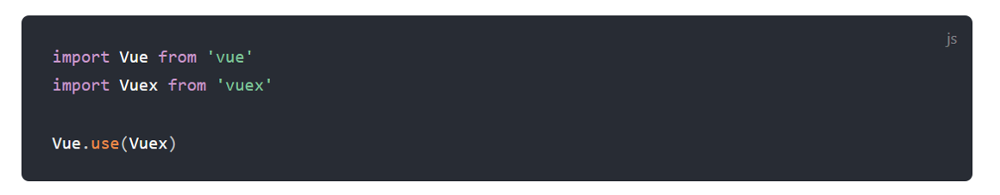

Then one day I figured out...
Vuex is a state management pattern + library for Vue.js applications.
Why do I need a state management library?
What's next?
Copied from official docs!

Copied from official docs!
if you forget: vue add vuex
const store = new Vuex.Store({
});
const store = new Vuex.Store({
state: {
hp: 20,
str: 15,
con: 16,
dex: 12,
int: 9,
wis: 11,
chr: 16,
type: 'fighter'
}
});
const app = new Vue({
el:'#app',
data: {
}, // more stuff
store: store
});
Hello, I see you are a {{ $store.state.type }}
Hello, I see you are a {{ charType }}
// rest of your vue app
computed: {
charType() {
return this.$store.state.type;
}
}
mutations blockstore.commit('name of mutation')store.commit('name of mutation', data)
const store = new Vuex.Store({
state: {
hp: 20,
//removed stuff
},
mutations: {
hit(state) {
state.hp--;
},
heal(state, amt) {
state.hp += amt;
}
}
});
//more code
methods: {
hitMe() {
this.$store.commit('hit');
},
healMe() {
this.$store.commit('heal', 3);
}
}
actions blockstore.dispatch('name of action')store.dispatch('name of action', data)
const store = new Vuex.Store({
state: {
hp: 20,
//removed stuff
},
mutations: {
heal(state,amt) {
state.hp+=amt;
},
},
actions: {
heal(context) {
setTimeout(() => {
context.commit('heal', 3);
}, 3000);
}
}
});
//more code
mmethods: {
hitMe() {
this.$store.commit('hit');
},
healMe() {
this.$store.dispatch('heal');
}
}
computed for Vuexstore.getters.nameOfGetterstore.getters.nameOfGetter(arg)
const store = new Vuex.Store({
state: {
hp: 20,
//removed stuff
},
getters: {
condition(state) {
if(state.hp < 10) return 'bad';
return 'good';
}
}
});
//more code
computed: {
condition() {
return this.$store.getters.condition;
},
}
reach me at @raymondcamden